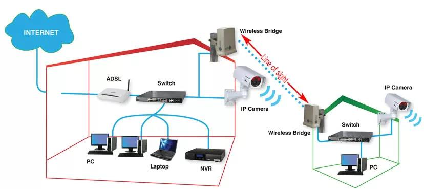

‼️УТЕРЯЛО АКТУАЛЬНОСТЬ ПРИ ВЫПОЛНЕНИЯ БОЕВЫХ И СПЕЦИАЛЬНЫХ ЗАДАЧ.‼️
Продолжаем рассказывать про повышение живучести расчетов БпЛА.
В данном посте мы разберем такое понятие, как радиомост и как «его едят».
Для начала мы должны понимать, что частоты на которых происходит управление БпЛА (КТР, командно-телеметрическая радиолиний), известны нашему противнику. Так же недавно противник опубликовал кадры, как он выявил и повредил антенну управления «Орлана».
Чтобы обезопасить себя от неожиданного прилёта огня артиллерии и РСЗО, необходимо использовать радиомост.
Что это такое?
Простыми словами разнос. Разнос от антенны управления, до истинного местоположения БпЛА.
Да, ничего секретного я не расскажу - что мы используем его, что противник.
Если вдадимся в определение, то:
Радиомосты - это беспроводные коммуникационные системы, которые позволяют передавать данные на большие расстояния без необходимости прокладывания кабелей. Они основаны на использовании радиоволн, и поэтому могут обеспечивать стабильное соединение даже в труднодоступных местах, где прокладка кабелей невозможна или нерациональна
В нашем случае, он необходим чтобы снизить риск прилёта.
Радиомост представляет из себе 2 антенны.
Вдаваться конкретику я не буду, какие антенны и т.п. только общие положения:
1) в комплекте у нас есть 2 антенны: передача - прием.
Собственно, антенну передачи мы кидаем на нашу основную антенну управления БпЛА, а антенну приема мы ставим на место нашей дислокации.
2) Так же в комплекте у нас идут различные кабеля:
- WAN;
- LAN;
Здесь главное не перепутать, в инструкции всё будет написано.
3) Питалово, да, у нас есть ещё два кабеля 220 в, на каждый мост.
Думаю, объяснять что и как устанавливать не надо, всё есть в интернете. Главное, чтобы ваш мост не входил в конфликт по частотам с частотами управления/картинки вашего БпЛА! Учитывайте это!!!
Советов какие брать мосты - дать не могу, их много, само-собой чем они дороже, тем лучше.
Но! Помните, что к противника есть РТР, которая может иметь высокую чувствительность.
Что для этого делать? Берем два провода Ethernet cat5, и один POE-SWITCH, от нашего приемника кидаем 75 метров на свитч, а от свитча еще 75 метров к нам. Вуаля, всё работает.
Шанс получить прилет снижен на 80%.
Опять таки - это рекомендации, а не призыв к действию!
Все зависит только от самих Вас!
Это вложение из поста t.me/techuav/424/425
Разберём пару текстов для увеличения живучести расчёта:
Использование автомобиля для запуска/посадки.
Прежде всего необходимо выбирать автомобиль, в который спокойно влезет ваша пусковая установка. По словом влезет понимается её полноценная установка, насколько помню и знаю, пусковые Элерона, ZALA и SuperCam потянет кузов УАЗ «Профи», насчет «Орлана» не знаю, не проверял.
Что мы делаем?
Крепим в кузов пусковую(катапульту) для нашей птички, собираем все необходимые элементы БпЛА и уже готовыми, едем на запуск. Можно ещё пройти все подготовки для запуска, чтобы выехав в район пуска, осталось только завести движок и произвести запуск БпЛА. Птичку можно сразу поставить на пусковую, стянув её вместе с пусковой жгутами - это необходимо для меньшей тряски во время езды.
С Орланом делаем те же самые манипуляции, только газуем заранее, чтобы движок уже имел рабочую температуру (Орлан можно возить на буханке на крыше).
Вместо жгутов можно использовать специальные стяжки на липучке, чтобы уменьшить время на снятие.
Перед всеми этими действиями, необходимо определить порядка 10 точек пуска и изучить, как на них будет себя вести борт (время его подключения к НПДУ - наземному пункту дистанционного управления).
по посадке: имея эту же машину быстро выезжаем к точке посадке( желательно всегда находиться в движении), по приезду к точке, сразу закинуть самолет и не промедляя уезжать. Уже в кузове можете разбирать его
Важно помнить, что в этот момент вы можете быть под прицелом вражеского БпЛА (в основном это “Shark”). Точки взлёта и посадки должны быть известны только расчёту и никому более. Желательно уезжать на несколько десятков километров, чтобы не было «хвоста»
И главное - данный мануал не является призывом к действию, он лишь должен помочь Вам в принятии верных решений.
Оператор БпЛА помни! Шаблонность действий всегда приводит к плачевным ситуациям
Это вложение из поста t.me/techuav/424/426
1) Для ПУ под SuperCam и ZALA оптимально использовать баллоны со сжатым воздухом, в этом случае, время накачки катапульты составляет около 30 секунд
2) Важно хорошо отработать рекогносцировку, забить под нее два полноценных дня, осмотреть поля в радиусе 5-7-10 километров от антенны, поездить по посадкам, со всеми познакомиться, с кем удастся, договориться о местах для запуска или отстоя, а так же о взаимодействии при запусках, чтобы не было ФФ
3) Оптимально выбить под себя два борта на расчет, один принял, второй сразу запустил
4) При приеме находится в районе точке посадки
, поддерживать связь с оператором, прибыть на ТП не ранее 5-7 минут до посадки, развернуться, принять управление, посадить на расстоянии не менее 200 метров от себя, быстро забрать, сложить, сместиться на расстояние не менее 300-400 метров, запустить и убежать в тыл под зонтики РЭБ в посадку или застройку
5) исключить ношение знаков различия, относящихся к БпЛА
6) Размещать ПВД Техников глубоко в тылу, за 30-40 км от ЛБС в застройке или лесу. А то и дальше.
7) Обязательно приобрести в авто усилитель gsm сигнала с роутером, а так же выносную антенну для радиосвязи
8) Не стесняться наладить устойчивую связь с РЭБ и ПВО в части запроса данных о наличии бортов в небе над ТП и/или 00, а так же получить примерную карту покрытия РЭБ для проработки маршрутов отхода расчета техников
9) Натренировать и отработать взаимодействие силами внештатных техников - водителя и связиста, подключать их к работе постоянно или время от времени, чтобы дать отдохнуть штатным технарям в течение 2-3 дней
10) авто: исключить наличие маск.сетей, и всего того, что может привлечь внимание агентуры и воздушной разведки противника
Это вложение из поста t.me/techuav/424/427
Уважаемые начальники расчетов приветствую! Учитывая опыт поражений нанесенных химарсами по нашим расчетом, хохол действует следующим образом: на первом запуске ловит расчет, следует за ним на ПВД, затем от ПВД к полю, наблюдает за приемом борта на посадке, после перезапитки, когда расчет готовится к очередному старту бьет химарсом Нам необходимо довести время запуска борта до минимума: на позиции выезжать с накаченными катапультами, время между приемом борта и следующим стартом не менее 1 часа, исключить пуск борта с одной точки (смещение делайте в пределах своего поля, но каждый раз, если нет возможности иметь несколько полей), борт на посадке кидайте в поле, выжидайте не менее 30 минут, затем малым ходом на машине движение к борту, техники спешиваются, ломают крылья и закидывают в машину, при этом она остается на малом ходу и уебывают с поля, после чего петляют по окрестностям. Берегите себя мужики максимально.
По запуску:
1. Межполетную подготовку борта делать не ранее чем, через 15-20 минут движения после приема. Больше можно, меньше нельзя! Главным в движении является не скорость а время движения. Каждая минута вашего движения это две минуты для вражеского беспилотника.
По возможности откатываться в тыл и вдоль фронта! Растягивать вражеского разведчика.
2. Подготовку борта делать на коротких остановках не более 5 минут. Если что-то не успели, складывать все в машину, проезжать не менее 200-300 метров и делать следующую короткую остановку. И так делать столько раз, сколько необходимо. Время остановки сокращать каждый раз на минуту.
3. В подготовке борта участвуют сразу все: если это соболь или буханка- борт укладывать у задних дверей мотогондолой внутрь. Пока двое укладывают парашют прямо через двери не вынимая борт, третий (оператор обычно) изнутри меняет акб, камеру, проверяет мотогондолу, лопасти, консоли. Если все делать четко- уложитесь в 4 минуты и на одной остановке. Исходя из возможностей присоединить одну консоль к борту заранее. Если требуется какие-то текущие ремонты- отъезжать подальше и также на коротких остановках. Оператор нсу всегда следит за временем!!!
4. Катапульту качать заблаговременно. В правой щеке катапульты поставить предохранитель , исключающий движение рычагов запуска назад. Высверлить отверстие, установить в него сквозной болт с гайкой. (подберите болт, который удобно выкручивать рукой). Предохранитель снимать когда поставила катапульту на сошки и плиту.
5. Предполетные проверки свести к минимуму: элевоны, вращение (только если меняли мотогондолу или новый борт), и ПВД. Ночью еще огни.
6. НСУ разворачивать и готовить заранее, в движении. Главный закон для мобильного оператора: он не должен задерживать работу техников!
7. После запуска, даже если борт еще не отдали, машина съезжает с плиты и начинает движение. Антенну на крыше удерживает один из техников. Как только отдали борт, антену класть на пол внутрь, и машина делает рывок не менее 50 метров (выйти из зоны поражения). НЕЛЬЗЯ разворачиваться на месте или проезжать через точку старта обратно после разворота! Двигаться со старта можно как вперед, так и задним ходом. Поэтому при выборе стартовой позиции учитывать эту возможность.
После рывка, ехать спокойно, дать оператору свернуть НСУ.
8. ВАЖНО: демонстрацию борта для наблюдения с воздуха свести к минимуму! По возможности все делать внутри машины или в помещении!
И ГЛАВНОЕ: если возникли проблемы с запуском и продолжительность увеличивается за пределы безопасного времени: немедленно остановить старт и свернуться.
9. Ежедневные проверки (танцы с бортом на четыре счета, калибровку) проводить не в месте старта, борт для посадки встречать и сажать с посадки, но не в коем случае в поле.
Это вложение из поста t.me/techuav/424/428
(АКТУАЛЬНО НЕ ДЛЯ БОЕВЫХ ЗАДАЧ)
Веб-страница создана автоматически на основе поста пользователя ТЭЧ БпЛА | FPV